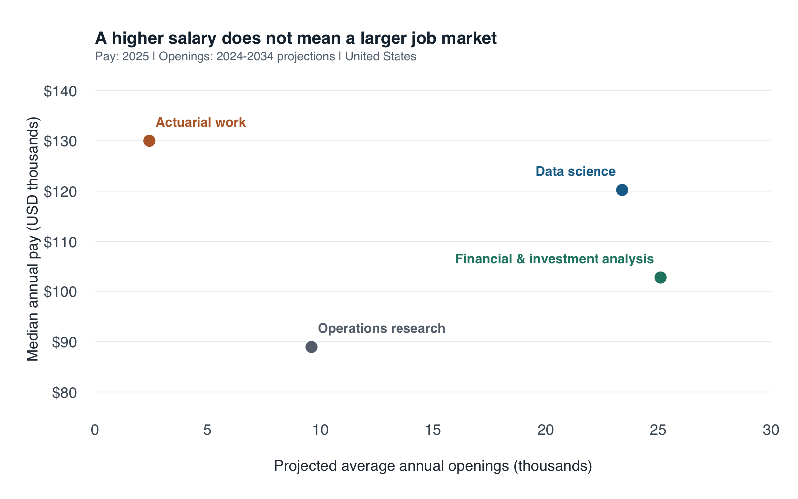

| Occupation | Median annual pay (2025) | Annual openings (2024–34 projection) | Growth category (2024–34) |
|---|---|---|---|
| Data Scientists | $120,230 | 23,400 | Much faster than average (7% or higher) |
| Operations Research Analysts | $88,940 | 9,600 | Much faster than average (7% or higher) |
| Financial and Investment Analysts | $102,740 | 25,100 | Faster than average (5% to 6%) |
| Actuaries | $130,000 | 2,400 | Much faster than average (7% or higher) |
Beyond the Highest Salary: Choosing a Quantitative Career
What four O*NET profiles suggest about where to focus a job search
web scraping
career planning
An ethical rvest scraping project comparing pay, projected openings, and preparation across four quantitative careers.
As a graduate student in Applied Economics and Data Science with a Financial Mathematics background, I face a practical question: which careers deserve my limited job-search and preparation time? The highest salary is tempting, but it says little about the size of a job market or the preparation a role requires. I compare four relevant paths: data science, operations research, financial and investment analysis, and actuarial work.
Collecting comparable evidence
I scraped four public O*NET® OnLine occupation profiles using R’s rvest package. These pages report BLS wage and employment data in a consistent format. This is a purposeful comparison of four careers, not a representative sample of all graduate jobs.
The script below identifies HTML field labels, extracts their adjacent values, removes dollar signs and commas, and saves numeric columns. It checks occupation names and reference periods before producing a CSV. Financial and investment analysts is a specific occupational category; I do not combine its salary with the broader financial-analyst category’s openings.
Show the complete rvest collection and cleaning script
# Collect and clean four O*NET occupation profiles.
# Run from the post2 directory. Existing snapshots are reused by default.
career_sources <- data.frame(
soc = c("15-2051.00", "15-2031.00", "13-2051.00", "15-2011.00"),
occupation = c("Data Scientists", "Operations Research Analysts",
"Financial and Investment Analysts", "Actuaries"),
stringsAsFactors = FALSE
)
career_sources$url <- paste0("https://www.onetonline.org/link/summary/",
career_sources$soc)
research_agent <- paste0("StudentCareerResearch/1.0 (contact: ",
"https://qianzhaoli949-afk.github.io/qianzhao-website/)")
# Pause between requests and stop on HTTP errors.
fetch_html <- function(url, dest) {
Sys.sleep(4)
page <- rvest::session(url, httr::user_agent(research_agent), httr::timeout(30))
status <- httr::status_code(page$response)
if (status != 200L) stop("Fetch stopped: HTTP ", status, " at ", url)
writeBin(page$response$content, dest)
invisible(format(Sys.time(), tz = "UTC", usetz = TRUE))
}
# Extract the value following a matching field label.
field <- function(doc, prefix) {
labels <- rvest::html_elements(doc, "#WagesEmployment dt")
text <- rvest::html_text2(labels)
hit <- which(startsWith(text, prefix))
if (length(hit) != 1L) stop("Expected one field: ", prefix)
value <- rvest::html_element(labels[[hit]], xpath = "following-sibling::dd[1]")
list(label = text[hit], value = rvest::html_text2(value))
}
match_one <- function(text, pattern) {
hit <- regmatches(text, regexec(pattern, text, perl = TRUE))[[1]]
if (length(hit) < 2L) stop("Could not parse: ", text)
hit[2]
}
parse_career <- function(path, soc, url, retrieved_utc) {
doc <- rvest::read_html(path)
title <- rvest::html_text2(rvest::html_element(doc, "h1 .main"))
pay <- field(doc, "Median wages")
employment <- field(doc, "Employment (")
growth <- field(doc, "Projected growth")
openings <- field(doc, "Projected job openings")
education <- rvest::html_text2(rvest::html_elements(doc, "#Education li"))
# Keep NA when the education section is absent.
degree <- NA_character_
share <- NA_real_
if (length(education)) {
shares <- as.numeric(vapply(education, match_one, character(1),
pattern = "^([0-9]+)%"))
top <- which.max(shares)
degree <- trimws(sub("^[0-9]+%\\s*(responded:\\s*)?", "",
education[top], perl = TRUE))
share <- shares[top]
}
period <- function(x) match_one(x, "\\(([0-9]{4}[-\u2013][0-9]{4})\\)")
wage <- as.numeric(gsub(",", "", match_one(pay$value, "\\$([0-9,]+) annual")))
jobs <- as.numeric(gsub(",", "", openings$value))
if (!is.finite(wage) || !is.finite(jobs) || wage <= 0 || jobs <= 0)
stop("Invalid wage/openings for ", soc)
if (period(growth$label) != period(openings$label))
stop("Mismatched projection periods for ", soc)
data.frame(
soc = soc, occupation = title, median_annual_pay_usd = wage,
wage_year = as.integer(match_one(pay$label, "([0-9]{4})")),
employment = as.numeric(gsub(",", "", match_one(employment$value, "^([0-9,]+)"))),
employment_year = as.integer(match_one(employment$label, "([0-9]{4})")),
growth_category = growth$value, projection_period = period(growth$label),
annual_projected_openings = jobs,
top_education_response = degree, education_response_pct = share,
education_all_responses = if (length(education)) paste(education, collapse = " | ") else NA_character_,
source_url = url, retrieved_utc = retrieved_utc,
stringsAsFactors = FALSE
)
}
build_careers <- function(data_dir = "data", refresh = FALSE) {
if (!requireNamespace("rvest", quietly = TRUE) ||
!requireNamespace("httr", quietly = TRUE))
stop('Install packages first: install.packages(c("rvest", "httr"))')
raw_dir <- file.path(data_dir, "raw")
dir.create(raw_dir, recursive = TRUE, showWarnings = FALSE)
manifest_file <- file.path(data_dir, "manifest.csv")
manifest <- if (file.exists(manifest_file)) {
read.csv(manifest_file, stringsAsFactors = FALSE)
} else {
data.frame(soc = character(), url = character(), retrieved_utc = character(),
file = character(), md5 = character())
}
paths <- file.path(raw_dir, paste0(career_sources$soc, ".html"))
needs_fetch <- refresh | !file.exists(paths)
if (any(needs_fetch)) {
robots_file <- file.path(data_dir, "robots.txt")
fetch_html("https://www.onetonline.org/robots.txt", robots_file)
rules <- readLines(robots_file, warn = FALSE)
# Require a new policy review if robots.txt has changed.
if (!file.exists("ROBOTS-REVIEWED.txt") ||
!identical(rules, readLines("ROBOTS-REVIEWED.txt", warn = FALSE)))
stop("robots.txt needs manual review before collecting; see DATA-NOTES.md.")
for (i in which(needs_fetch)) {
stamp <- fetch_html(career_sources$url[i], paths[i])
manifest <- manifest[manifest$soc != career_sources$soc[i], , drop = FALSE]
manifest <- rbind(manifest, data.frame(
soc = career_sources$soc[i], url = career_sources$url[i],
retrieved_utc = stamp, file = basename(paths[i]),
md5 = unname(tools::md5sum(paths[i]))
))
write.csv(manifest, manifest_file, row.names = FALSE)
}
}
rows <- lapply(seq_len(nrow(career_sources)), function(i) {
m <- manifest[manifest$soc == career_sources$soc[i], , drop = FALSE]
if (nrow(m) != 1L || m$md5 != unname(tools::md5sum(paths[i])))
stop("Missing or changed snapshot for ", career_sources$soc[i])
parse_career(paths[i], career_sources$soc[i], career_sources$url[i], m$retrieved_utc)
})
result <- do.call(rbind, rows)
if (!identical(result$occupation, career_sources$occupation))
stop("Occupation labels have changed; review the source pages.")
if (length(unique(result$wage_year)) != 1L ||
length(unique(result$projection_period)) != 1L)
stop("Sources mix reference years; review before comparing.")
write.csv(result, file.path(data_dir, "careers.csv"), row.names = FALSE)
result
}I checked the site’s robots rules and content license, used an identifiable user agent, and spaced requests four seconds apart. The script stops on HTTP errors and saves dated HTML snapshots. Re-rendering uses these snapshots, so it adds no traffic. No login, CAPTCHA, or access restriction was bypassed.
The snapshot was collected on September 19, 2026, in New York (September 20 UTC). It contains 2025 wages and 2024–2034 employment projections, as published by O*NET at collection time. These are different reference periods and should not be described as a single year’s observations. Growth is published in categories, so I preserve those labels rather than inventing precise percentages.
Pay and opportunity tell different stories

Actuaries have the highest median pay, $130,000, but only 2,400 projected annual openings. Data scientists combine $120,230 median pay with 23,400 openings—about 9.8 times the actuarial total. For someone still exploring career directions, that difference makes data science worth investigating alongside the salary leader.
Financial and investment analysts have the most openings in this comparison, 25,100, despite a lower median wage of $102,740. Operations research offers 9,600 openings and $88,940 median pay. Its emphasis on quantitative decision-making makes it relevant to my training even though its wage is lower.
Preparation also matters. In the available O*NET education responses, 48% of data-science respondents identify a bachelor’s degree as required, while 43% of operations-research respondents identify a master’s degree. These are survey responses, not universal hiring rules. The financial-and-investment profile lacks this education breakdown; the script records it as missing rather than guessing.
Turning the comparison into a decision
My recommendation is to prioritize exploring data-science and financial-and-investment analyst roles, while keeping operations research on the shortlist. A concrete next step is to review ten current entry-level vacancies in each of the first two categories, record recurring qualifications, and build one relevant project for each. That follow-up would test whether broad occupational opportunities translate into realistic roles for my experience and location.
Actuarial work remains attractive if I want its specialized preparation: BLS describes a series of professional exams. I would investigate that commitment before choosing it solely for higher pay.
The comparison has limits. Occupational medians are not starting salaries. Projected annual openings include growth and replacement needs; they are not live vacancies or exclusively entry-level jobs. A larger count does not imply easier hiring without information about applicant supply. National data also omit personal fit, local living costs, and work-authorization requirements. The takeaway is to use pay and market size to build an informed shortlist, then validate it against actual job requirements.
Sources and reproducibility
The four profile links, raw snapshots, retrieval times, checksums, and package versions are included in the reproduction bundle. Download the cleaned data, scraping script, plotting script, or data notes.
Sources: Data Scientists, Operations Research Analysts, Financial and Investment Analysts, and Actuaries. The source register identifies BLS as the provider of wage and projection figures.
This analysis adapts information from O*NET OnLine, U.S. Department of Labor, Employment and Training Administration, under CC BY 4.0. Qianzhao Li cleaned and visualized the data and added interpretation; USDOL/ETA has not approved or endorsed these changes. O*NET® is a trademark of USDOL/ETA. External BLS data are attributed separately above.
To reproduce, unzip the bundle, open R in that folder, install rvest and httr once, and run the following. The saved snapshots are used by default.
Show R code
install.packages(c("rvest", "httr")) # First run only
source("scrape-careers.R")
careers <- build_careers("data", refresh = FALSE)
source("plot-careers.R")
plot_careers(careers)The website’s GitHub repository contains the website source; this post’s code and data are in blog/posts/post2/.